V1.8.6.5.1 Armor Integrity QA report · Audit data · Performance
실제 브라우저 캡처입니다. 앞의 동일 위치 쌍은 수정 전 MISSING → 수정 후 COVERED입니다. 녹색 표본이 완전한 장갑 피복을 증명하지는 않습니다. 보라색 미정 영역과 다른 함선의 미해결 후보를 보존했습니다.
browser-pair/before-same-patch.png · actual Production UI 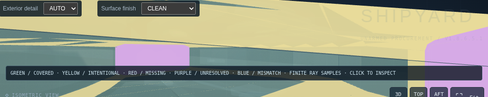
browser-pair/after-same-patch.png · actual Production UI browser-pair/before-overview.png · actual Production UI browser-pair/after-overview.png · actual Production UI 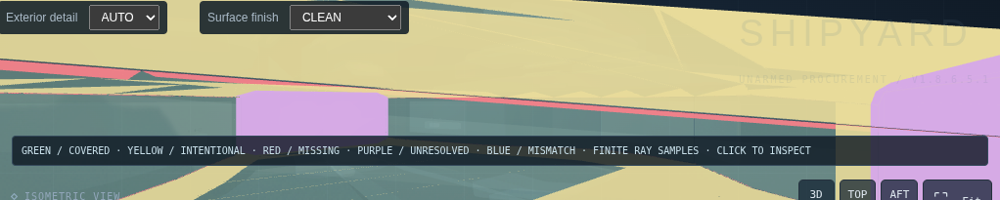
browser/BALANCED-integrity.png · actual Production UI 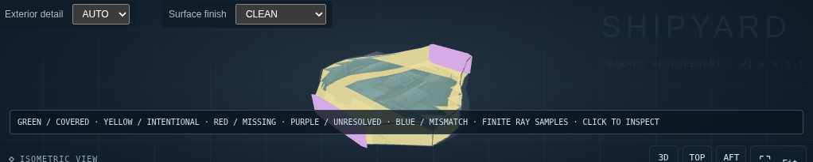
browser/BALANCED-repaired-integrity.png · actual Production UI 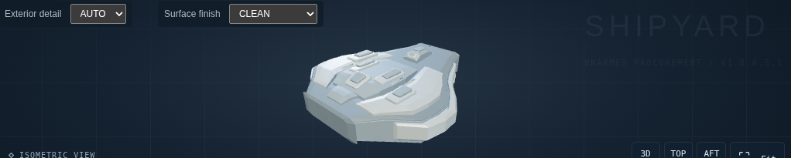
browser/BALANCED-repaired-normal.png · actual Production UI 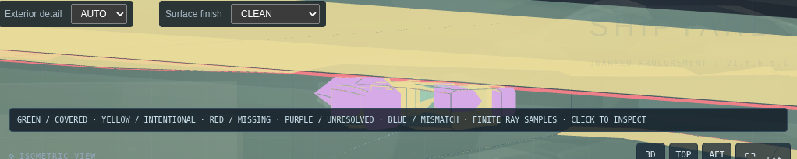
browser/BLOCK_ASSEMBLY-integrity.png · actual Production UI 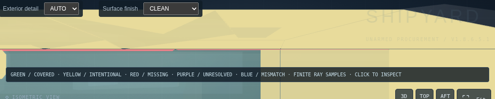
browser/CORE_AND_NACELLES-integrity.png · actual Production UI 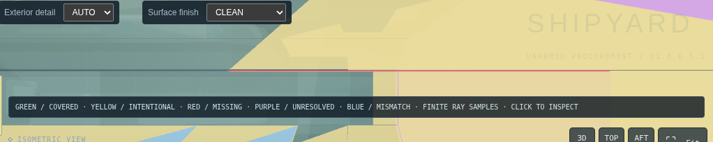
browser/HYBRID-integrity.png · actual Production UI 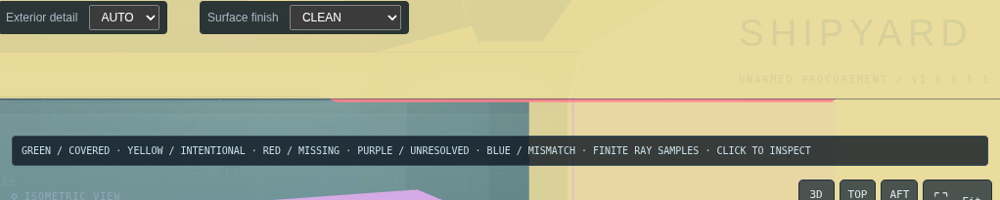
browser/SPINE_AND_MODULES-integrity.png · actual Production UI 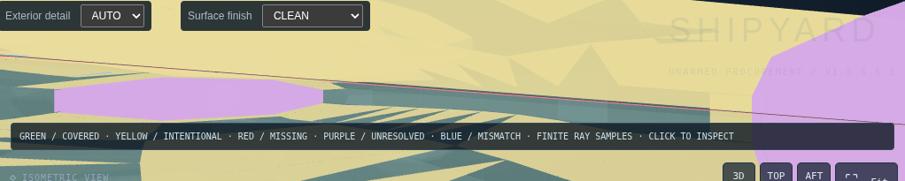
browser/STACKED_BLOCKS-integrity.png · actual Production UI 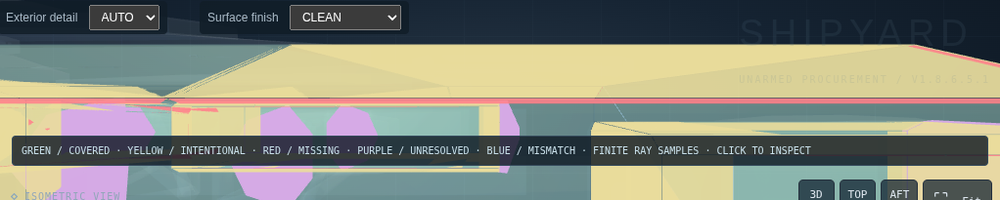
browser/TRUSS_POD-integrity.png · actual Production UI 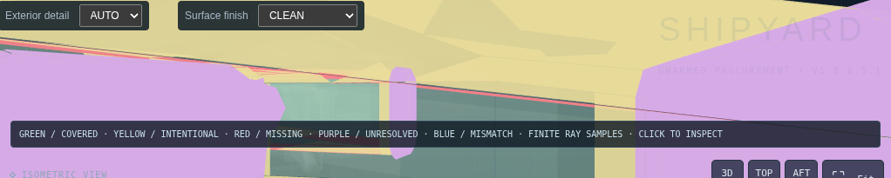
browser/TWIN_HULL-integrity.png · actual Production UI 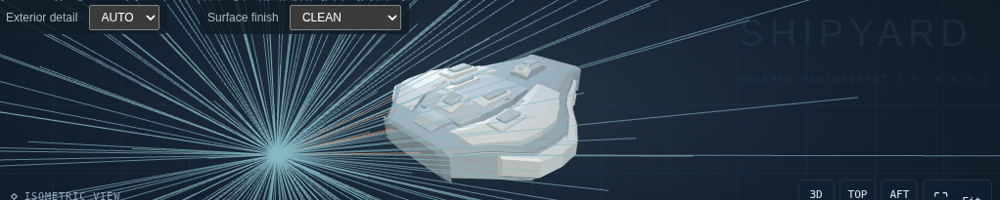
browser/authoritative-burst.png · actual Production UI 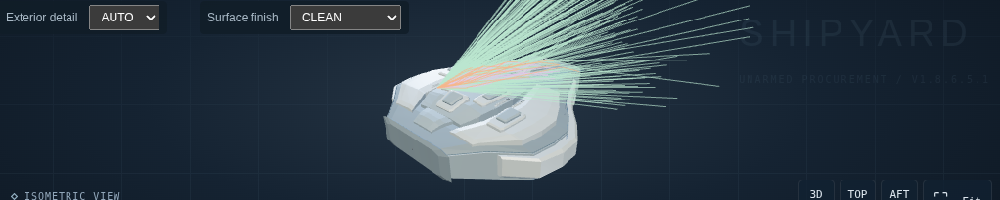
browser/internal-burst.png · actual Production UI visual/BALANCED-Normal.png · actual isolated ShipViewer / pixel regression 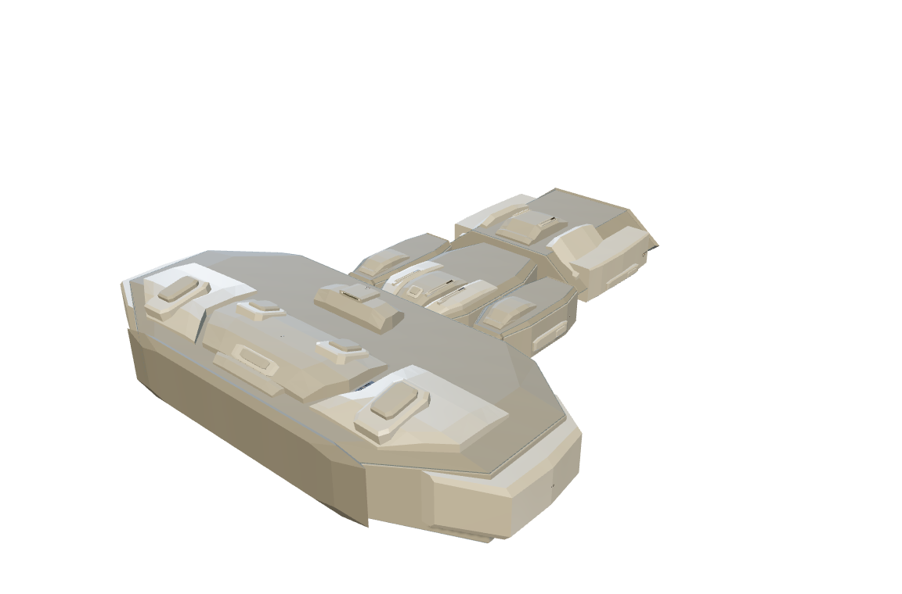
visual/BLOCK_ASSEMBLY-Normal.png · actual isolated ShipViewer / pixel regression visual/CORE_AND_NACELLES-Normal.png · actual isolated ShipViewer / pixel regression 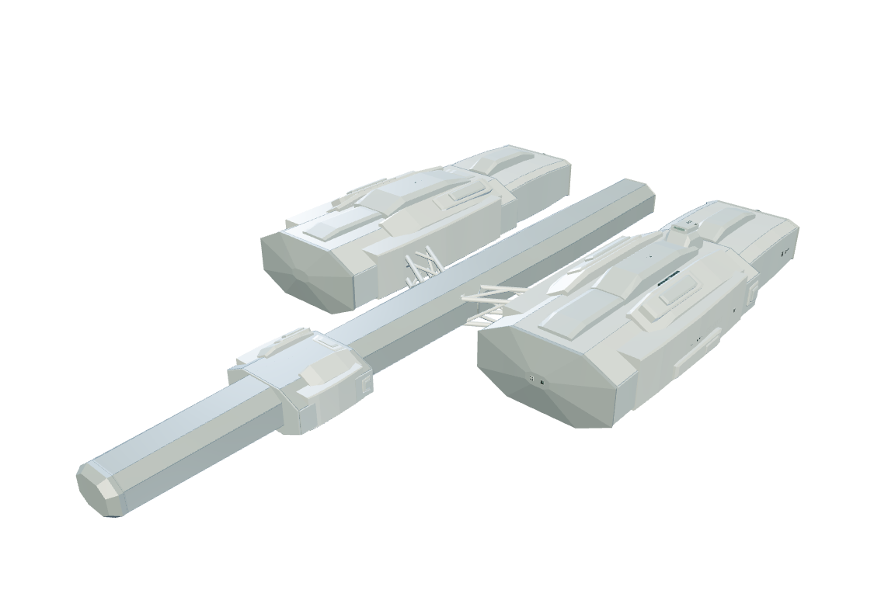
visual/HYBRID-Normal.png · actual isolated ShipViewer / pixel regression 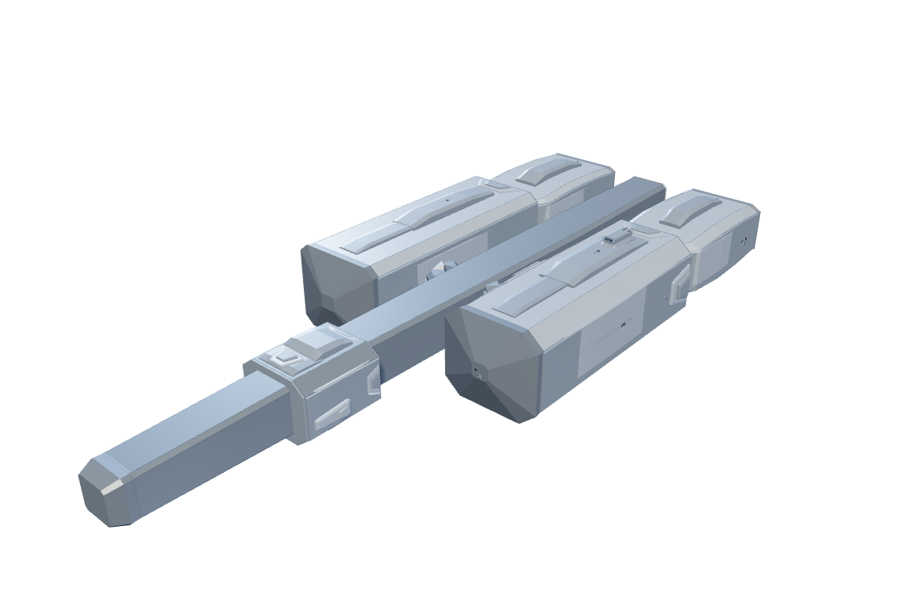
visual/SPINE_AND_MODULES-Normal.png · actual isolated ShipViewer / pixel regression visual/STACKED_BLOCKS-Normal.png · actual isolated ShipViewer / pixel regression visual/TRUSS_POD-Normal.png · actual isolated ShipViewer / pixel regression 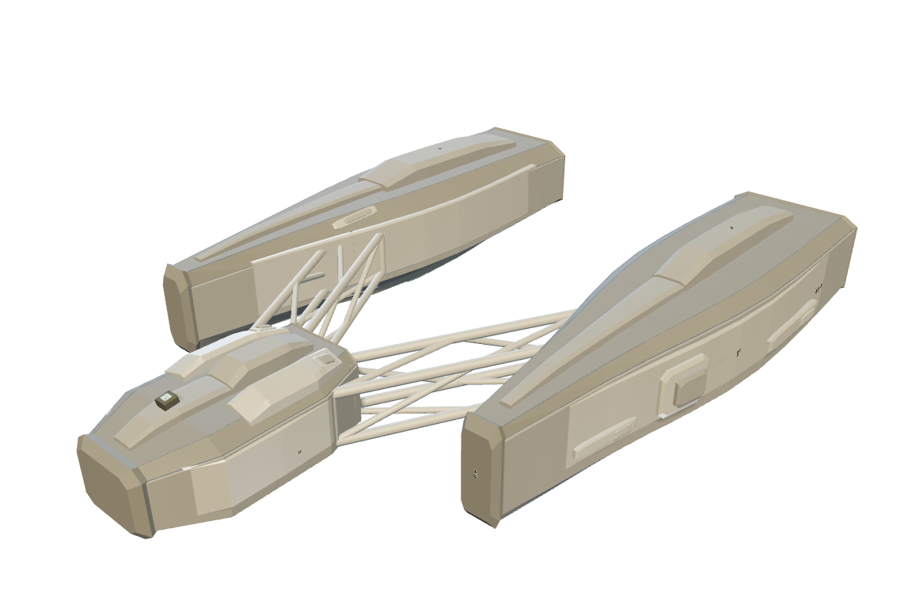
visual/TWIN_HULL-Normal.png · actual isolated ShipViewer / pixel regression 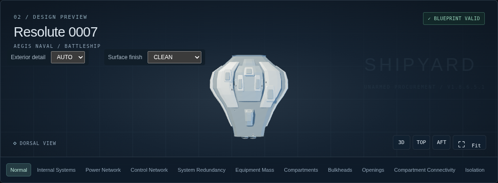
browser-free/free-mount.png · actual Production UI 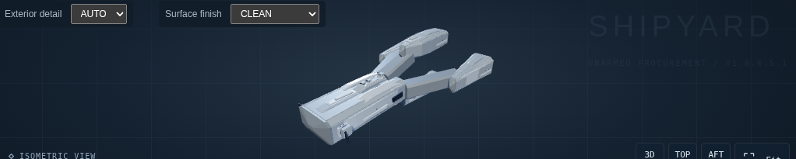
browser-free/legacy-armed.png · actual Production UI 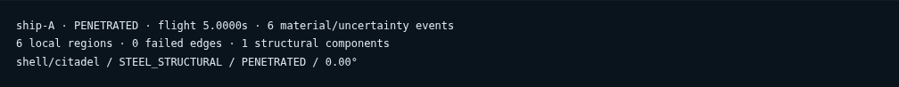
browser-inspector/kinetic-result.png · actual Production UI